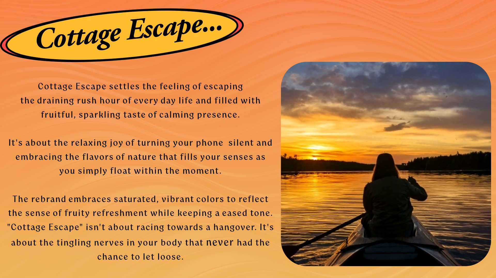
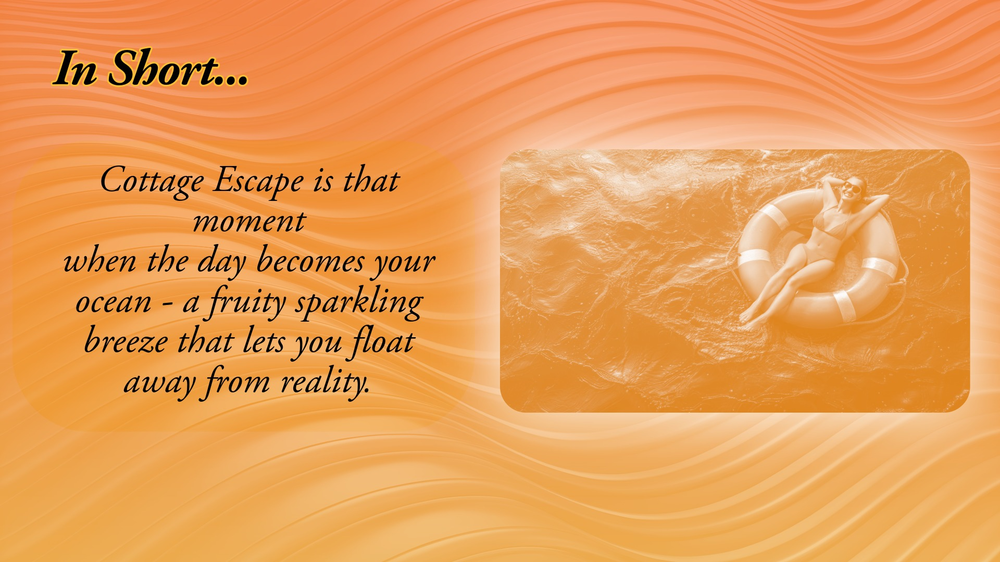
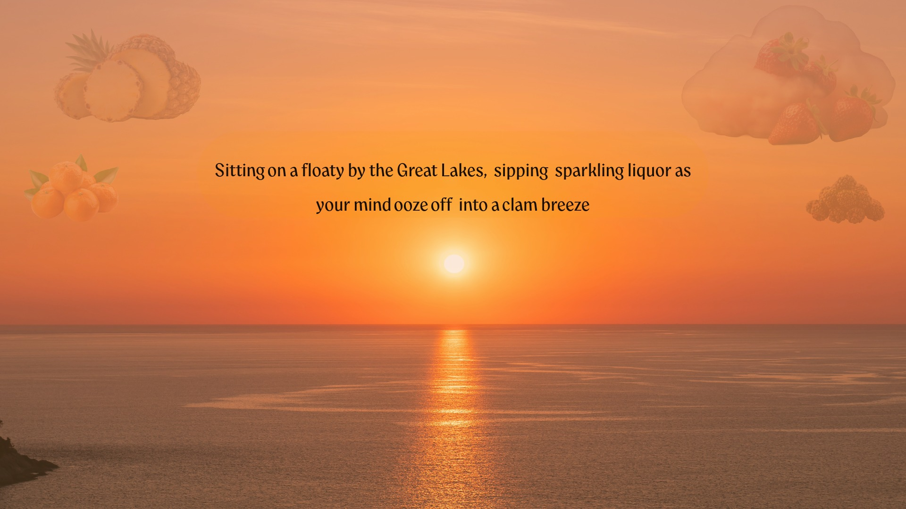
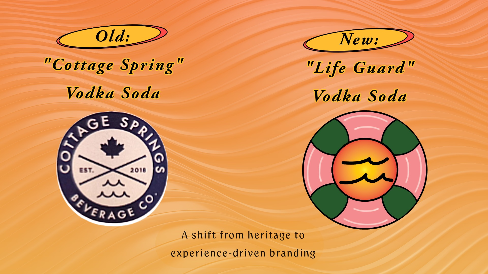

The North Star
A key challenge in this project was to create a fitting visual identity that would attract a target audience between ages of 19 - 24
while shifting the perception of the product. Instead of positioning the drink a good associated with partying and intoxication, I aimed to reframe the brand as a relaxing, enjoyable beverage suited for a lesiure, cottage setting. This required careful consideration of color, tone, and logo design to communicate a balance between playfulness and calmness.